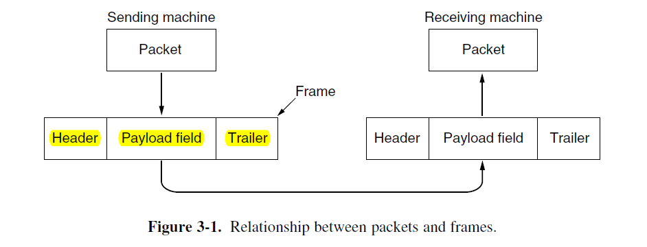
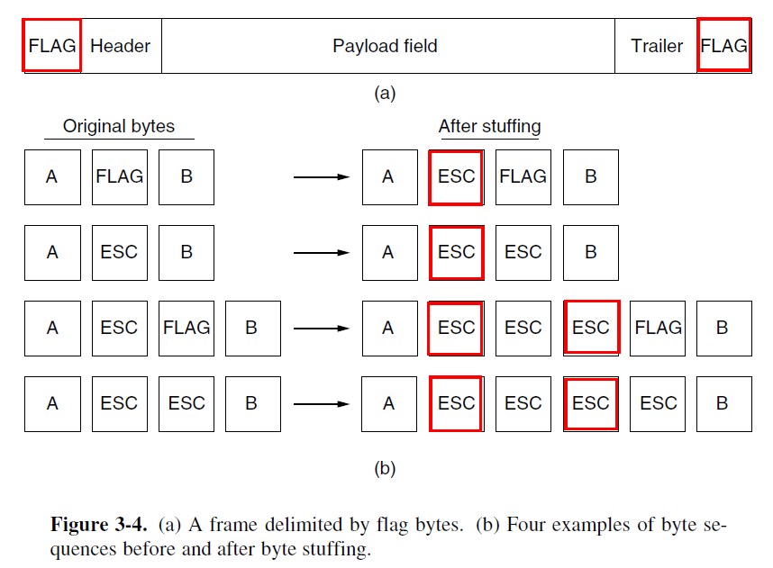
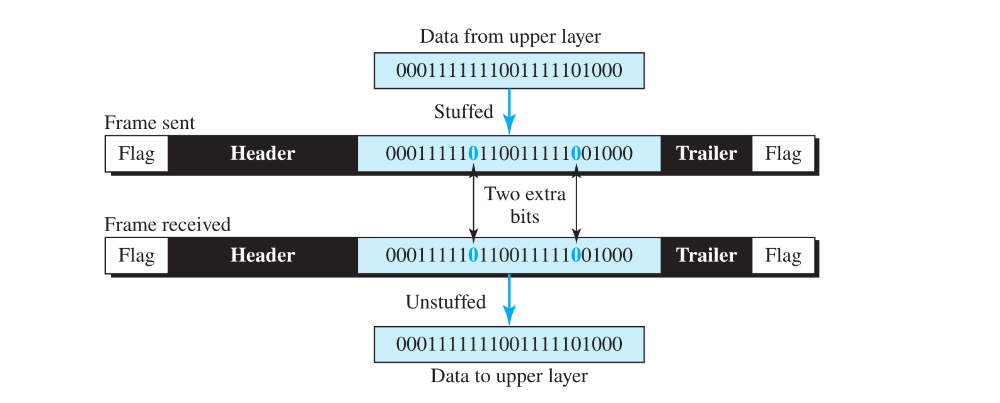

2 Data Link Layer
Data Link Layer 的功能是给网络层提供服务：最主要的服务就是将数据从源主机的 Network Layer 传递到目标主机的 Network Layer。而其实际提供的服务根据协议的不同，分为以下三类
- 无确认的无连接服务。如 Ethernet（使用可靠信道，错误率很低）
- 有确认的无连接服务。如 802.11 Wifi（使用不可靠信道）
- 有确认的面向连接服务。如卫星信道或长途电话（使用长距离且不可靠的信道，此时如果确认丢失导致多次重复收发一个帧的开销远大于简单地重传整个帧的开销）
Framing
Data Link Layer 从上一层（Network Layer）获得数据包（Packet），然后将这些数据包封装成帧以便传输，这种过程叫做成帧（Framing）。
每个帧包含一个帧头（Header），一个载荷（Payload）用于存放数据包，一个帧尾（Trailer）。

- Byte Count
它利用 Header 的一个字段来标识这个帧的长度（注意要包括帧头自身，例如：
5|Byte1|Byte2|Byte3|Byte4，这是一个长度为 5 字节的帧）。接收方读取到这值段的时候，就知道这个帧有多长。但如果这个字段在传输时出现错误，会导致严重后果：接收方永久失去同步。简单重传也不能解决。 -
Flag bytes with byte stuffing
定义两个字节 FLAG（标志字节）与 ESC（转义字节）。FLAG 字节用于作为帧的开始与结束符。
发送方：如果待发送的数据中有一段要分割成一个单独的帧，就在这一段数据前后都加上 单独的 FLAG；同时，由于数据本身可能会出现 FLAG 字节，所以将 数据内部的 FLAG 之前都加上一个 ESC 字节。同理，同时，由于数据本身可能会出现 ESC 字节，所以将 数据内部的 ESC 之前都加上一个 ESC 字节。这个过程就是 Byte stuffing。
这样以来，帧头尾都是单独的 FLAG，而帧内数据本身存在的 FLAG 就变成了 ESC FLAG，本身存在的 ESC 就变成了 ESC ESC。

接收方：接收到这个数据后，如果看到单独的 FLAG，就知道这是上一帧的结束，新一帧的开始。而接收方的 Data Link Layer 将数据传给上一层之前，也要先删一遍数据内部的 ESC（
ESC ESC -> ESC; ESC FLAG -> FLAG）使用一个字节来填充，实现上较为复杂，开销较大，兼容性也不太好（这种方法要求数据必须是 8 位字节的倍数，并且不能是任意比特流。如果数据不是以 8 位字节为单位，或者需要传输任意的比特流，字节填充就难以适用）。
应用：PPP Protocol
类比格式化字符串
可以把这个方法类比成你在写 C 语言时
printf()的格式化字符串。如果我们想要输出一个hello world，而且使用双引号作为语句开头和结尾的字符，而将反斜杠当作单词间的分隔符（也就是期望输出到"hello\world"）。我们直接printf(""hello\world"");肯定不可以，编译器不会认你这样写。但是，我们可以这样写：
printf("\"hello\\world\"");编译器看到
"\"hello\\world\""的时候，它首先看到开头的"，知道了这是一个格式字符串的开始。然后它看到\"，这就是 ESC + FLAG，它会知道这是让它输出字符"，而不是将其当作字符串的结束； 它看到\\，这就是 ESC + ESC，它会知道这是让它输出字符\，而不是将其当作一个特殊的东西。 -
Flag bits with bit stuffing
由于填充字节开销较大，兼容性不好，因此实际上更多的使用 Bit stuffing 方法：相同的思路，只不过这次将 FLAG 从一个单独的字节，设成了一个特殊的比特串，例如
0x7E:01111110。而增加 ESC 的方式，也变成了如果数据内部出现了连续五个 1，就在后面加上一个 0。这样就从每次填充一个字节长的 ESC 变成了每次填充一个比特。因此这个方法叫 Bit stuffing。这个方法每次转义只需要填充一个比特，因此最终要传输的帧相比原来的数据增加的长度是前者的八分之一。效率更高。

应用：USB，HDLC
但是 Stuffing method 的共同缺点，就是帧的长度依赖于原数据。数据中出现的 FLAG / ESC 次数越多，要填充的次数就越多，帧就会变得越长
-
Physical layer coding violations （违规编码法）
这个方法就是搭物理层的便车。它使用物理层传输数据时使用的 Reversed signals，从而很容易找到帧的开始和结束，而不需填充数据。
现代 Data Link Layer Protocol 使用以上的方法的组合。Ethernet 和 802.11 通过一个名叫 前导码（Preamble） 的 well-defined pattern 来标识一个帧的开始。前导码之后是帧头的长度计数段，用于定位帧的结束处。（注意此时帧尾是用于错误检测的校检码，不是不用帧尾了）
Error Control
错误控制要求 Data Link Layer 确保所有的帧最终都被按照正确的顺序传递到接收方的 Network Layer。
- 首要问题：如何保证接收方收到正确的信息？如果信息传输途中出现差错该怎么办？ \(\rightarrow\) 检错码（让发送方重传）与纠错码（接收方自行找到正确信息）
- 对于需要确认的服务，发送方还需要确认接收方是否真的收到了正确信息 \(\rightarrow\) 协议要求接收方返回确认信息，告知发送方信息是否传到/传到的信息是否正确，来让发送方决定自身下一步动作
- 如果信息根本没传到，接收方根本没返回确认信息，而发送方一直在等待戈多 \(\rightarrow\) 引入计时器，如果超时就重传
- 如果重传加上网络延迟导致接收方多次收到同一帧，导致 Data Link Layer 多次传递同一帧给 Network Layer \(\rightarrow\) 给发送的帧分配序号，让接收方区分原始帧和重传帧
检错码与纠错码本质都是 在发送的数据中加入冗余信息 。假设一帧原本有 \(m\) 位数据，插入了 \(r\) 位用于校验的冗余信息。一个包含 \(n=m+r\) 位的单元称为 \(n\) 位 码字（codeword），将其称为 \((n,m)\) 码。